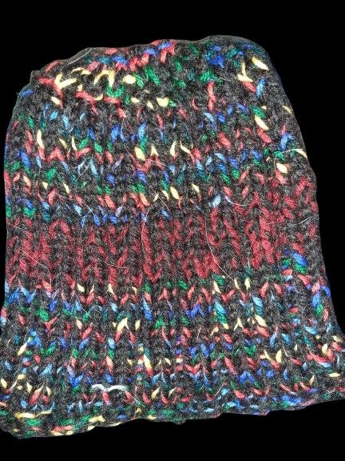
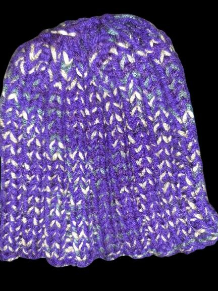
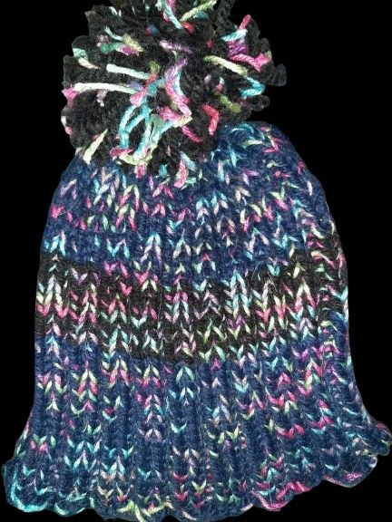
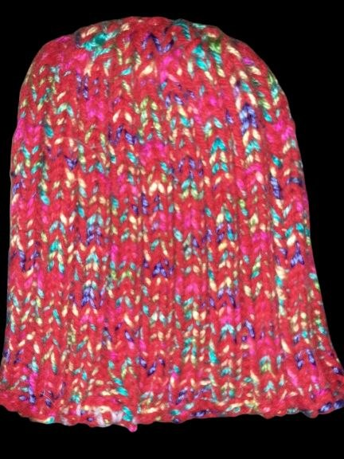
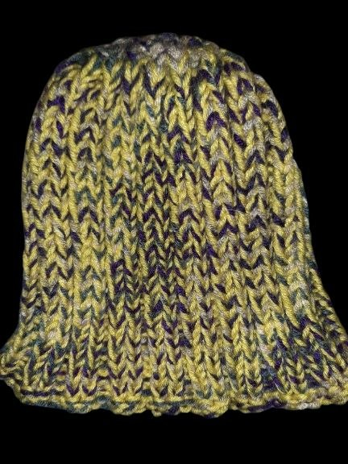
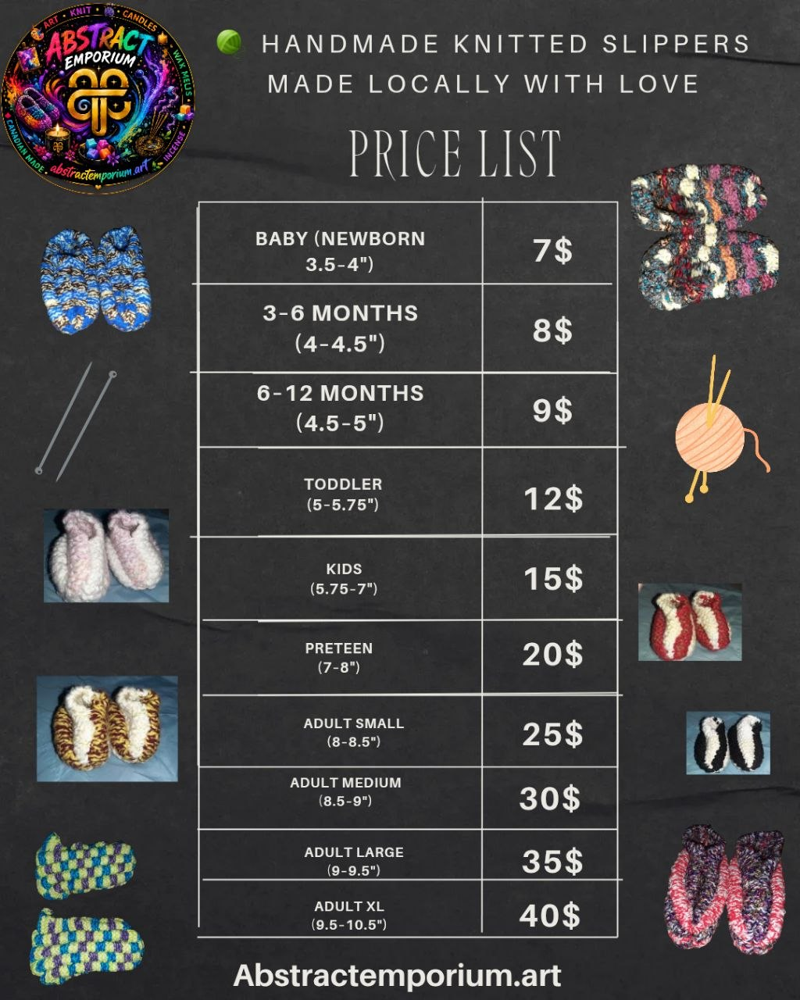

Lissa's Knitting Creationz is our handmade line — cozy beanies, reusable knit cloths, mop pads, and warm crochet slippers. Made to order with care, passed down through generations of family craft. Local pickup in Thunder Bay + delivery possible by arrangement.
Our Handmade Pieces

🧶 Confetti Charcoal Tuque
Mariner ribbed style. Charcoal base with multicolor confetti speckles. Newborn–adult sizes.
Newborn $5 · Baby $8 · Toddler $12 · Child $15 · Adult $20
Inquire to Order
🧶 Purple Variegated Tuque
Mariner ribbed style. Purple yarn with white, green, and blue flecks. Folded brim.
Newborn $5 · Baby $8 · Toddler $12 · Child $15 · Adult $20
Inquire to Order
🧶 Navy Confetti Pom-Pom Tuque
Mariner ribbed style. Navy with pink, teal, and lime speckles. Contrast band + pom-pom.
Newborn $5 · Baby $8 · Toddler $12 · Child $15 · Adult $20
Inquire to Order
🧶 Pink Confetti Tuque
Mariner ribbed style. Vibrant reddish-pink with blue, purple, green, and yellow flecks.
Newborn $5 · Baby $8 · Toddler $12 · Child $15 · Adult $20
Inquire to Order
🧶 Mustard & Navy Tuque
Mariner ribbed style. Mustard yellow and dark navy two-tone with lighter flecks. Folded brim.
Newborn $5 · Baby $8 · Toddler $12 · Child $15 · Adult $20
Inquire to Order🧹 Mop Cloth Pads
Reusable, washable, eco-friendly. Snug fit for most Swiffer WetJet mops (4.5" × 10"). Soft yet durable.
$8 ea · 3 for $20
Inquire to Order🟫 Checkerboard Cloths
Reusable, washable, and made to last. Soft, durable knit in black, grey, and tan checkerboard.
$5 ea · 3 for $10
Inquire to Order
🧦 Cozy Slippers
Handmade knit in checkerboard & classic stripes. Made to order — message for custom pairs and sizes.

Inquire to Order🧣 Reversible Scarves
Two looks in one — black ribbed / oatmeal cable shown; any colour available made to order. Cozy, wide variety.
$30 CAD each
Inquire to Order🎩 Stocking Cap (Long Tail)
Hand-knit ribbed cap with a long braided tail + pom. Unisex, made to order in black/grey stripe.
Kids $16 · Youth $20 · Adult $24
Large $28 · XL $32
📍 Local pickup available in Thunder Bay.
🚗 Delivery/drop-off may be possible depending on location — message to arrange.
✉️ Questions or custom requests? Message me to order.